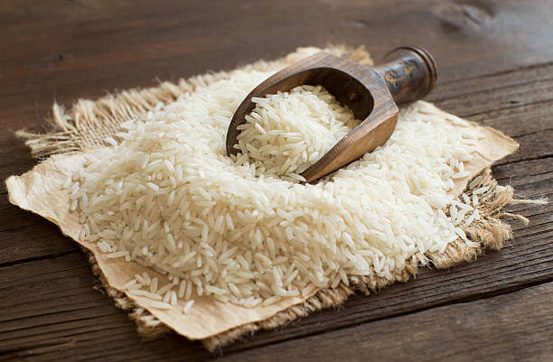
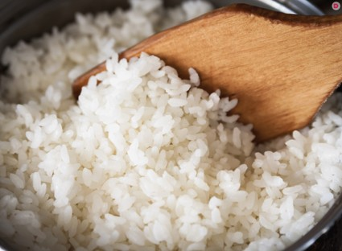
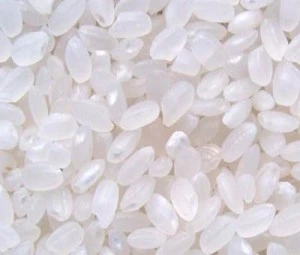
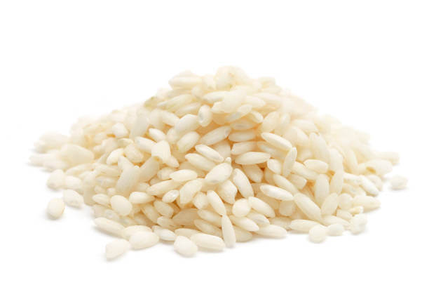
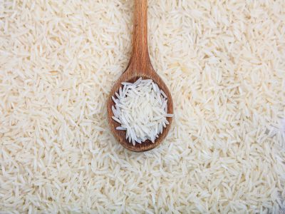
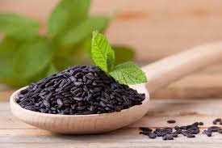

Басмати
Происхождение: Индия, Пакистан
Особенности: Длинные зёрна, при варке становятся ещё длиннее, имеют характерный ореховый аромат. Идеален для плова, бирьяни и как гарнир к пряным блюдам.
Время варки: 10–12 минут + 5 минут отдыха

Происхождение: Индия, Пакистан
Особенности: Длинные зёрна, при варке становятся ещё длиннее, имеют характерный ореховый аромат. Идеален для плова, бирьяни и как гарнир к пряным блюдам.
Время варки: 10–12 минут + 5 минут отдыха

Происхождение: Таиланд
Особенности: Белоснежные, чуть склеивающиеся зёрна с лёгким цветочным ароматом. Главный гарнир в тайской и вьетнамской кухне.
Время варки: 9–10 минут + 5 минут отдыха

Происхождение: Италия
Особенности: Округлые зёрна с высоким содержанием крахмала. При медленном приготовлении в бульоне создают нежную кремовую текстуру ризотто.
Время варки: 18–20 минут, помешивая

Происхождение: Россия, Краснодарский край
Особенности: Круглые зёрна, хорошо развариваются, становятся мягкими и чуть липкими. Идеален для каш, молочных блюд и пудингов.
Время варки: 12–15 минут

Особенности: Зёрна обработаны паром, что сохраняет больше витаминов. При варке остаются рассыпчатыми, не слипаются. Хороший выбор для начинающих.
Время варки: 15–17 минут

Происхождение: Юго-Восточная Азия
Особенности: Глубокий чёрный цвет, богат антиоксидантами, ореховый вкус. Часто используется в десертах и экзотических гарнирах.
Время варки: 30–35 минут